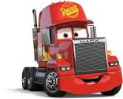

Personajes
rayo mcqueen.jpg)
Rayo mcqueen
Rayo McQueen es el protagonista de la serie "Cars". Es un coche de carreras rojo que pasa de ser egoísta a valorar la amistad y la humildad. Destaca en las carreras y hace amigos en Radiador Springs. Su evolución y carisma lo hacen un personaje icónico en la franquicia.
Sally
Sally Carrera es un automóvil de lujo azul en la franquicia "Cars" de Disney-Pixar. Tiene una personalidad tranquila, es dueña de un motel en Radiador Springs y desarrolla una relación romántica con Rayo McQueen. Su personaje se destaca por su elegancia y su papel en la historia.
Mate
Mate es un personaje de la franquicia "Cars". Es una grúa de aspecto envejecido con una personalidad amigable y excéntrica. Trabaja como grúa en Radiador Springs y es el mejor amigo de Rayo McQueen. Su sencillez, pasatiempos peculiares y su habilidad para meterse en situaciones cómicas lo convierten en un personaje querido y cómico en la serie de películas.
Chick Hicks
Chick Hicks es un personaje de la franquicia "Cars" de Disney-Pixar. Es un automóvil de carreras verde con una actitud agresiva y competitiva. Su objetivo principal es ganar la Copa Pistón, y a menudo recurre a tácticas poco éticas para lograrlo. Es conocido como el rival de Rayo McQueen en la serie.
guido.jpg)
Guido
Guido es un personaje de la franquicia "Cars". Es un vehículo de carreras amarillo con una personalidad entusiasta y alegre. Destaca como mecánico en el equipo de Rayo McQueen y es conocido por su habilidad en el cambio de neumáticos a gran velocidad. Su lealtad y pasión por las carreras lo hacen un miembro valioso del equipo y un amigo cercano de Rayo McQueen y Mate.
Sheriff
El Sheriff es un personaje de la franquicia "Cars" de Disney-Pixar. Tiene un diseño de vehículo de policía y una personalidad tranquila y sensata. Cumple el papel de hacer cumplir la ley en Radiador Springs y actúa como una figura de autoridad justa. También desempeña un papel importante en la vida de Rayo McQueen, ayudándolo a entender la importancia de la comunidad y las relaciones personales. Su personaje es respetado y apreciado en el pueblo.
Fillmore
Fillmore es un personaje de la franquicia "Cars" de Disney-Pixar. Es una combivan hippie con una apariencia psicodélica y una personalidad relajada. Es el encargado de la gasolinera en Radiador Springs y defiende la vida sostenible y la "energía positiva". Aunque no desempeña un papel principal en la trama, su presencia aporta originalidad y humor a la historia, y es amigo de otros residentes del pueblo. El personaje de Fillmore es interpretado por George Carlin.
Doc Hudson
Doc Hudson, apodado "Doc," es un personaje de la franquicia "Cars" de Disney-Pixar. Es un Hudson Hornet de color azul oscuro con una personalidad sabia y reservada. Antes de retirarse, fue un corredor de élite conocido como "El Fabuloso Hudson Hornet". En la historia, actúa como mentor y figura paterna para Rayo McQueen, enseñándole importantes lecciones sobre la vida y la humildad. El personaje de Doc es respetado y apreciado en Radiador Springs. Su voz es interpretada por Paul Newman.
auto que ayuda mcqueen.jpg)
THE KING
The King, o "El Rey", es un personaje de la franquicia "Cars" de Disney-Pixar. Es un automóvil de carreras de la marca Dinoco de color azul, con una apariencia regia y una personalidad madura y amable. A lo largo de su carrera, ha ganado múltiples títulos y es considerado uno de los mejores corredores. Su retirada digna en la trama de la primera película ejemplifica su carácter y su respeto en el mundo de las carreras. The King es un personaje respetado por otros corredores y fanáticos.
Rojo.jpg)
ROJO
Rojo es un camión de bomberos en la franquicia "Cars" de Disney-Pixar. Tiene una apariencia típica de vehículo de emergencia con su color rojo brillante y sirena en el techo. Su función principal es garantizar la seguridad de Radiador Springs en caso de incendio u otras emergencias. Aunque no tiene una personalidad desarrollada en la trama, su presencia es esencial en la comunidad del pueblo.
Sargento
Sargento, también conocido como "Sarge," es un personaje de la franquicia "Cars" de Disney-Pixar. Es un vehículo militar con una personalidad autoritaria y comprometida. Su función principal es supervisar la parada de abastecimiento de combustible en Radiador Springs. Aunque tiene una personalidad seria, es leal a su trabajo y a la comunidad. Su apariencia y función reflejan su naturaleza militar en el pueblo.
Ramon
Ramon es un personaje de la franquicia "Cars" de Disney-Pixar. Es un vehículo "lowrider" de color morado con una personalidad relajada y creativa. Es amante del arte y dueño de un taller de personalización de autos en Radiador Springs. Su apariencia única y su pasión por la personalización lo convierten en un personaje colorido y creativo en la comunidad del pueblo. Interactúa con otros residentes y es apreciado por su actitud amigable.

Mack
Mack es un camión de transporte en la franquicia "Cars" de Disney-Pixar. Su trabajo principal es llevar a Rayo McQueen a las carreras y eventos, y proporcionarle apoyo durante sus viajes. Mack es conocido por su personalidad amigable y cariñosa, y su estrecha relación con Rayo McQueen lo hace un personaje importante en la vida del automóvil de carreras.